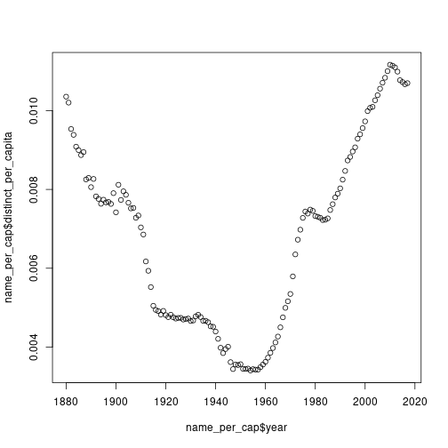

Before we get to tidyverse, we just want to think about function composition for a moment. This is the kind of thing that everyone knows already, but we are thinking about it just for the sake of getting into the rhythm.
If f(x) = x^2 and g(y) = y + 1, then in math:
\[f(g(5)) = (5+1)^2 = 36\]
In R:
f <- function(x){ x ** 2 }
g <- function(y){ y + 1 }
f(g(5))## [1] 36In R there is a shorthand for function composition called the pipe operator %>%. The expression 5 %>% g() %>% f() means “take 5, plug it into g, then plug the result into f”:
5 |> g() |> f()## [1] 36One downside is that the pipe is annoying to type. In RStudio (with the R extension installed), Ctrl+Shift+M produces the pipe. The arrow <- is Alt+-.
The reason this is useful is that it is a good way to think about data frames.
square <- function(y){ y ** 2 }
5 |> g() |> square()## [1] 36tidyverse and dplyr verbsLet’s load tidyverse and the babynames data set:
library(dplyr)
library(ggplot2)
library(tidyr)
library(babynames)filter for rowsfilter selects rows. The following are all equivalent — different ways of selecting rows for which the year is 1880 and the sex is "F":
filter(babynames, year == 1880, sex == "F")
idx <- (babynames$year == 1880) & (babynames$sex == "F")
babynames[idx, ]
babynames |> filter(year == 1880 & sex == "F")
babynames |> filter(year == 1880, sex == "F")The pipe form reads nicest. Technically it is just calling the function filter; it is just more convenient to write this way. filter can take several conditions joined with commas (equivalent to &).
select for columnsselect produces a new data frame with the specified columns (in the order you specify):
babynames |> select(year, name) |> head()## # A tibble: 6 × 2
## year name
## <dbl> <chr>
## 1 1880 Mary
## 2 1880 Anna
## 3 1880 Emma
## 4 1880 Elizabeth
## 5 1880 Minnie
## 6 1880 MargaretIt is kind of “filter for columns” — get a new data frame with just those specific columns.
arrange for sortingarrange produces a data frame sorted by the column(s) you specify. babynames happens to be sorted by year already:
babynames |> arrange(n) |> head()## # A tibble: 6 × 5
## year sex name n prop
## <dbl> <chr> <chr> <int> <dbl>
## 1 1880 F Adelle 5 0.0000512
## 2 1880 F Adina 5 0.0000512
## 3 1880 F Adrienne 5 0.0000512
## 4 1880 F Albertine 5 0.0000512
## 5 1880 F Alys 5 0.0000512
## 6 1880 F Ana 5 0.0000512This is sorted in increasing order, so it shows the rarest entries. To sort in descending order, which is the more interesting thing because you want the most common ones:
babynames |> arrange(desc(n)) |> head()## # A tibble: 6 × 5
## year sex name n prop
## <dbl> <chr> <chr> <int> <dbl>
## 1 1947 F Linda 99686 0.0548
## 2 1948 F Linda 96209 0.0552
## 3 1947 M James 94756 0.0510
## 4 1957 M Michael 92695 0.0424
## 5 1947 M Robert 91642 0.0493
## 6 1949 F Linda 91016 0.0518You can combine with filter:
babynames |> filter(year == 2000) |> arrange(desc(n)) |> head(10)## # A tibble: 10 × 5
## year sex name n prop
## <dbl> <chr> <chr> <int> <dbl>
## 1 2000 M Jacob 34471 0.0165
## 2 2000 M Michael 32035 0.0153
## 3 2000 M Matthew 28572 0.0137
## 4 2000 M Joshua 27538 0.0132
## 5 2000 F Emily 25953 0.0130
## 6 2000 M Christopher 24931 0.0119
## 7 2000 M Nicholas 24652 0.0118
## 8 2000 M Andrew 23639 0.0113
## 9 2000 F Hannah 23080 0.0116
## 10 2000 M Joseph 22825 0.0109If you want the top 10 female names in 2000:
babynames |> filter(year == 2000, sex == "F") |> arrange(desc(n)) |> head(10)## # A tibble: 10 × 5
## year sex name n prop
## <dbl> <chr> <chr> <int> <dbl>
## 1 2000 F Emily 25953 0.0130
## 2 2000 F Hannah 23080 0.0116
## 3 2000 F Madison 19967 0.0100
## 4 2000 F Ashley 17997 0.00902
## 5 2000 F Sarah 17697 0.00887
## 6 2000 F Alexis 17629 0.00884
## 7 2000 F Samantha 17266 0.00866
## 8 2000 F Jessica 15709 0.00787
## 9 2000 F Elizabeth 15094 0.00757
## 10 2000 F Taylor 15078 0.00756You can arrange by multiple columns: arrange(year, name) sorts by year, then within each year by name.
renamebabynames |> rename(number = n) |> head()## # A tibble: 6 × 5
## year sex name number prop
## <dbl> <chr> <chr> <int> <dbl>
## 1 1880 F Mary 7065 0.0724
## 2 1880 F Anna 2604 0.0267
## 3 1880 F Emma 2003 0.0205
## 4 1880 F Elizabeth 1939 0.0199
## 5 1880 F Minnie 1746 0.0179
## 6 1880 F Margaret 1578 0.0162This is sometimes useful because n is also a function (we will see that in a second).
select with renamingYou can rename as you select. This gives you a data frame with year, sex, and number instead of n:
babynames |> select(year, sex, number = n) |> head()## # A tibble: 6 × 3
## year sex number
## <dbl> <chr> <int>
## 1 1880 F 7065
## 2 1880 F 2604
## 3 1880 F 2003
## 4 1880 F 1939
## 5 1880 F 1746
## 6 1880 F 1578This is equivalent to:
babynames |> rename(number = n) |> select(year, sex, number)mutate for adding a columnmutate adds one more column; the column can be whatever you want.
The way babynames works, you have n (count) and prop (proportion). So 7% of female babies, say, are named Mary. If you want to reconstruct the population, you can divide n by prop:
babynames |> mutate(total_by_year = round(n / prop)) |> head()## # A tibble: 6 × 6
## year sex name n prop total_by_year
## <dbl> <chr> <chr> <int> <dbl> <dbl>
## 1 1880 F Mary 7065 0.0724 97605
## 2 1880 F Anna 2604 0.0267 97605
## 3 1880 F Emma 2003 0.0205 97605
## 4 1880 F Elizabeth 1939 0.0199 97605
## 5 1880 F Minnie 1746 0.0179 97605
## 6 1880 F Margaret 1578 0.0162 97605In the first 10 rows, total_by_year is all the same — that’s because they are all 1880, and the number of Marys divided by the proportion of Marys equals the number of Janes divided by the proportion of Janes, etc.
summarizesummarize creates a new data frame where there is a new column (you can have several), and the column is a function of the columns of the original data frame:
babynames |> summarize(mean_n = mean(n))## # A tibble: 1 × 1
## mean_n
## <dbl>
## 1 181.So this took the column n and computed the mean of it. mean is just a function like any other; you plug in a vector and get the mean.
By itself this is not that useful, but it becomes useful when you can group:
babynames |> group_by(sex) |> summarize(mean_n = mean(n))## # A tibble: 2 × 2
## sex mean_n
## <chr> <dbl>
## 1 F 151.
## 2 M 223.This separates the data frame out by the different sexes and computes the mean of n for each. So this is the mean number of babies born per name, by sex. As it happens, in the US data set, there are more babies per name that are male than female — there is basically more diversity in female names. It’s approximately the same number of male and female babies; it’s just that there are fewer male names. So more babies per name as it turns out.
distinctdistinct is kind of similar to unique except it operates by row. It says: get me all the rows that are different.
Let’s reconstruct the per-year total population:
b_tot <- babynames |> mutate(total = round(n / prop))
b_tot |> head()## # A tibble: 6 × 6
## year sex name n prop total
## <dbl> <chr> <chr> <int> <dbl> <dbl>
## 1 1880 F Mary 7065 0.0724 97605
## 2 1880 F Anna 2604 0.0267 97605
## 3 1880 F Emma 2003 0.0205 97605
## 4 1880 F Elizabeth 1939 0.0199 97605
## 5 1880 F Minnie 1746 0.0179 97605
## 6 1880 F Margaret 1578 0.0162 97605All the rows here are unique because the (year, name) combinations are unique. But if we drop the name, n, and prop columns, lots of rows become the same — because it’s just (year, sex, total).
b_tot |> select(year, sex, total) |> distinct() |> head()## # A tibble: 6 × 3
## year sex total
## <dbl> <chr> <dbl>
## 1 1880 F 97605
## 2 1880 F 97604
## 3 1880 F 97606
## 4 1880 F 97603
## 5 1880 F 97607
## 6 1880 F 97602So distinct is like unique but for rows. (The numbers are not quite equal across names within a year, just because of rounding.)
You can also do distinct(year) to get all the different years:
babynames |> distinct(year) |> head()## # A tibble: 6 × 1
## year
## <dbl>
## 1 1880
## 2 1881
## 3 1882
## 4 1883
## 5 1884
## 6 1885distinct(year, name) gets all distinct (year, name) combinations.
summarize with multiple columnsbabynames |> summarize(mean_n = mean(n), median_n = median(n))## # A tibble: 1 × 2
## mean_n median_n
## <dbl> <int>
## 1 181. 12group_by followed by mutate lets you do per-group proportions:
babynames |> group_by(year, sex) |>
summarize(total = sum(n)) |>
head()## # A tibble: 6 × 3
## # Groups: year [3]
## year sex total
## <dbl> <chr> <int>
## 1 1880 F 90993
## 2 1880 M 110491
## 3 1881 F 91953
## 4 1881 M 100743
## 5 1882 F 107847
## 6 1882 M 113686n_distinct and the n functionn_distinct(...) is the number of distinct rows in a data frame (recall that for vectors we could use length(unique(v))).
Here we count the number of distinct names for each sex × year:
babynames |> group_by(sex, year) |>
summarize(distinct_names = n_distinct(name)) |>
head()## # A tibble: 6 × 3
## # Groups: sex [1]
## sex year distinct_names
## <chr> <dbl> <int>
## 1 F 1880 942
## 2 F 1881 938
## 3 F 1882 1028
## 4 F 1883 1054
## 5 F 1884 1172
## 6 F 1885 1197The n() function can be used inside summarize, mutate, and filter. Its job is to count the number of rows in each group:
babynames |> rename(num = n) |> summarize(total_entries = n())## # A tibble: 1 × 1
## total_entries
## <int>
## 1 1924665(Not quite the same as all the name-year combinations: babynames %>% summarize(name_year_count = n_distinct(year, name)).)
which.maxwhich.max(c(10, 20, 3, 10)) returns the location (index) of the maximum.
which.max(c(10, 20, 3, 10))## [1] 2What is the most popular name every year, by sex?
babynames |> group_by(year, sex) |>
summarize(most_popular_name = name[which.max(n)]) |>
head()## # A tibble: 6 × 3
## # Groups: year [3]
## year sex most_popular_name
## <dbl> <chr> <chr>
## 1 1880 F Mary
## 2 1880 M John
## 3 1881 F Mary
## 4 1881 M John
## 5 1882 F Mary
## 6 1882 M JohnIt is John in 1880 for M; over the years it changes. With group_by, the table gets split per year × sex, and we ask name[which.max(n)] for each group.
We compute the number of distinct names per capita, every year, for sex == "F":
name_per_cap <- babynames |> filter(sex == "F") |>
group_by(year) |>
summarize(distinct_names = n_distinct(name),
total_by_year = sum(n)) |>
mutate(distinct_per_capita = distinct_names / total_by_year) |>
select(year, distinct_per_capita)
plot(name_per_cap$year, name_per_cap$distinct_per_capita)
Let’s read this together. group_by(year) means one row per year. filter(sex == "F") means we are just within F rows. We compute two columns: distinct_names is the number of distinct names within the (year) data frame, and total_by_year is the sum of n. Now we are inside this guy: we want distinct_per_capita, which is distinct_names / total_by_year. This is a mutate because we are adding another column, not grouping. Then we just keep year and distinct_per_capita.
There were fewer names in 1950 — everyone had the same name. Things got more diverse recently.
To do it for both M and F at the same time, just add sex to the group:
name_per_cap_2 <- babynames |>
group_by(year, sex) |>
summarize(distinct_names = n_distinct(name),
total_by_year = sum(n)) |>
mutate(distinct_per_capita = distinct_names / total_by_year) |>
select(year, sex, distinct_per_capita)
head(name_per_cap_2)## # A tibble: 6 × 3
## # Groups: year [3]
## year sex distinct_per_capita
## <dbl> <chr> <dbl>
## 1 1880 F 0.0104
## 2 1880 M 0.00958
## 3 1881 F 0.0102
## 4 1881 M 0.00990
## 5 1882 F 0.00953
## 6 1882 M 0.00967There are arguments either way.
gapminder mini-tourThe gapminder data set is a dataset of countries with life expectancy, population, GDP per capita for different years:
library(gapminder)
head(gapminder)## # A tibble: 6 × 6
## country continent year lifeExp pop gdpPercap
## <fct> <fct> <int> <dbl> <int> <dbl>
## 1 Afghanistan Asia 1952 28.8 8425333 779.
## 2 Afghanistan Asia 1957 30.3 9240934 821.
## 3 Afghanistan Asia 1962 32.0 10267083 853.
## 4 Afghanistan Asia 1967 34.0 11537966 836.
## 5 Afghanistan Asia 1972 36.1 13079460 740.
## 6 Afghanistan Asia 1977 38.4 14880372 786.One way: filter, get the countries, unique them, take the length.
asia <- gapminder |> filter(continent == "Asia")
length(unique(asia$country))## [1] 33A more idiomatic way:
gapminder |> filter(continent == "Asia") |>
select(country) |>
distinct() |>
count()## # A tibble: 1 × 1
## n
## <int>
## 1 33y1 and y2top_country <- function(continent_name, y1, y2){
g1 <- gapminder |>
filter(continent == continent_name,
year >= y1,
year <= y2)
g1$country[g1$lifeExp == max(g1$lifeExp)]
}
top_country("Asia", 1970, 1980)## [1] Japan
## 142 Levels: Afghanistan Albania Algeria Angola Argentina Australia ... ZimbabweNote the >= and <=: gapminder samples years every five years (1952, 1957, …, 2007), so strict inequalities year > 1970 and year < 1980 would catch no rows at all (nothing in the data is strictly between 1970 and 1980). It’s a common gotcha with this dataset.
We want the sum of all populations, by year. With group_by(year) and summarize(sum(pop)):
world_pop <- gapminder |> group_by(year) |> summarize(total = sum(pop))
world_pop |> filter(year == 1982)## # A tibble: 1 × 2
## year total
## <int> <dbl>
## 1 1982 4289436840world_pop |> filter(year == 2007)## # A tibble: 1 × 2
## year total
## <int> <dbl>
## 1 2007 62510131794.3 billion in 1982 and 6.2 billion in 2007 — that sounds about right.
sapply and vector-safe functionsIf what you have is a function that is just x^2, you can apply it to a vector directly — it just works:
square <- function(x){ x ** 2 }
vec <- c(1, 2, 4, 5)
square(vec)## [1] 1 4 16 25This only works for algebraic expressions. If you have something like:
special.square <- function(x){
if(x == 42){
42
} else {
x ** 2
}
}then special.square(vec) produces an error, because if(c(F, F, F, F)) does not make sense — there has to be one logical value inside the if.
If what you want is to apply special.square to every element of vec, use sapply:
vec <- c(1, 2, 42, 5)
sapply(X = vec, FUN = special.square)## [1] 1 4 42 25sapply applies the function specified by FUN to every element of the vector after X. (FUN is short for “function”, not “fun”; though it kind of is fun.)
You can also call without named arguments — sapply(vec, special.square) — but using named arguments makes things clear.
Nothing conceptually complicated here. It is just for-loop logic re-expressed as a function call. R does have for loops as well; it is just that in the style we are working in, you can also do sapply. R also happens to run sapply faster than the equivalent for loop.
sapply with extra argumentsSuppose we want to compute elem - 2 for every element elem in a vector using the function minus:
minus <- function(a, b){ a - b }
vec <- c(5, -6, 7, -8)
sapply(X = vec, FUN = minus, b = 2)## [1] 3 -8 5 -10We can specify that the 2 is sent into b. Note that X = vec is special: that will be the first argument given to minus, i.e. every element of X = vec will be sent to a.